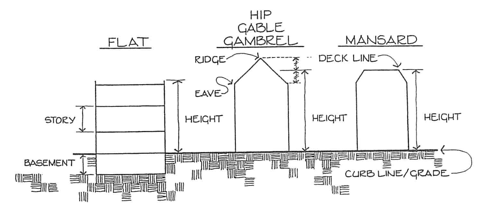
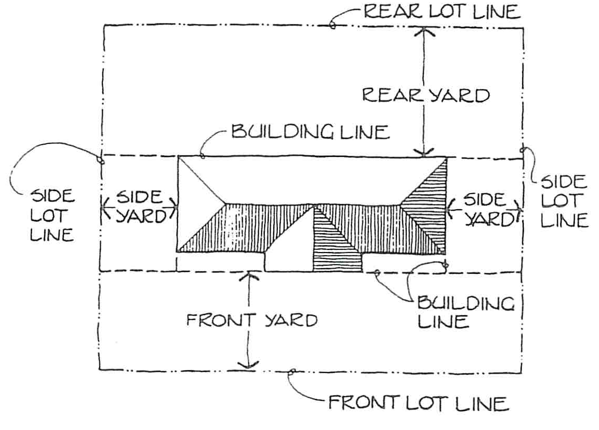

3 General Definitions
3.1 General Provisions
The following rules of construction shall apply unless inconsistent with the plain meaning of the context of this Ordinance.
3.1.1 Tense
Words used in the present tense include the future tense.
3.1.2 Number
Words used in the singular include the plural, and words used in the plural include the singular.
3.1.3 Shall and May
The word “shall” is mandatory; the word “may” is permissive.
3.1.4 Headings
In the event that there is any conflict or inconsistency between the heading of an article, section or paragraph of this Ordinance and the context thereof, the said heading shall not be deemed to affect the scope, meaning or intent of such context.
3.2 General Terminology
The word “Village” shall mean the Village of Cortland, Nebraska. The word “Governing Body” shall mean the Village Board of Cortland, Nebraska. The words “Planning Commission” shall mean the Planning Commission of Cortland duly appointed by the governing body of the Village of Cortland.
Words or terms not herein defined shall have their ordinary meaning in relation to the context.
3.3 Definition
For the purpose of this Ordinance certain words and terms used herein are defined as follows;
3.3.1 Accessory Building
Any detached subordinate (in size and use) building which serves a function customarily incidental to that of the main building or main use of the premises. All accessory building shall be affixed to the ground. Accessory buildings not securely fastened to the ground are prohibited unless they are residential, agricultural or recreational storage sheds.
3.3.2 Accessory Use of Building
A subordinate building or use which customarily is incidental to that of the main or principal building or use of the premises, which accessory use does not alter the principal use of the subject lot or affect other properties in the district.
Customary accessory uses include, but are not limited to, tennis courts, swimming pools, detached garages, garden houses, antenna/satellite dishes, amateur radio or land mobile towers of less than 100 feet, and residential, agricultural and recreational storage sheds. Garages or other accessory uses attached to the principal structure shall be considered a part thereof and meet the requirements of the principle structure.
Accessory building or use shall not include a commercial trailer as defined in section Nebraska RS 30-301(5) that is placed on property after its wheels, axles, springs and towing tongue have been removed, or a commercial storage container, that is intended to be used for shelter, protection, and storage of property.
3.3.3 Accessory Structure
Detached subordinate (in size and use) structure located on the same lot with the principal structure, the use of which is incidental and accessory to that of the principal structure. Common accessory structures include but are not limited to aboveground swimming pools, trampolines, picnic shelter, and play equipment.
3.3.4 Adult Entertainment Establishment, Live
Any building or portion of a building which contains any exhibition or dance wherein any employee or entertainer is unclothed or in such attire, costume or clothing so as to expose to view any portion of the female breast below the areola, or male or female genitals, vulva, anus and/or buttocks, or any portion of the pubic hair and which exhibition or dance is for the benefit of a member or members of the adult public, or advertised for the use or benefit of a member of the adult public, held, conducted, operated or maintained for profit, direct or indirect.
3.3.5 Adult-Oriented Entertainment
Any exhibition, performance or dance of any type conducted in a premise where such exhibition, performance or dance is distinguished or characterized by a predominant emphasis on the depiction, description, simulation or relation to the following sexual activities:
- Human genitals in a state of sexual stimulation or arousal;
- Acts of human masturbation, sexual intercourse or sodomy; or
- Fondling or other erotic touching of human genitals, pubic region, buttocks or female breast; or
- Any exhibition, performance or dance which is intended to sexually stimulate any member of the public and which is conducted on a regular basis or as a substantial part of the premises’ activity. This includes, but is not limited to, any such exhibition, performance or dance performed for, arranged with or engaged in with fewer than all members of the public on the premises at the time, with separate consideration paid, either directly or indirectly, for such performance, exhibition or dance and which is commonly referred to as table dancing, couch dancing, taxi dancing, lap dancing, private dancing or straddle dancing.
3.3.6 Adult Retail
An enclosed building or any portion thereof which, for money or any other form of consideration, devotes a significant or substantial portion of stock in trade to the sale, exchange, rental, loan, trade, transfer or viewing of “adult-oriented merchandise.” For purposes of this definition, a retail establishment devotes a significant or substantial portion of its stock in trade to adult-oriented merchandise if the sale, exchange, rental, loan, trade, transfer or viewing of such adult-oriented merchandise is clearly material to the economic viability of the business. It is presumed that such adult-oriented merchandise accounts for any one or more of the following:
- Thirty percent or more of the retail dollar value of gross sales over any quarterly period;
- Thirty percent or more of the floor area of the store open to the public;
- Thirty percent or more of the retail dollar value of all merchandise displayed in the store;
- Thirty percent or more of the store’s inventory (whether measured by retail dollar value or number of items); or
- Thirty percent or more of the store’s stock in trade.
- In no event shall a retailer whose transactions only incidentally or marginally
3.3.7 Agricultural Farm or Operation
A tract of land or a combination of tracts of land utilized primarily for agricultural purposes which either singularly or jointly consist of at least ten (10) acres and which produces one thousand dollars ($1,000) or more of farm products each year.
3.3.8 Alley
A dedicated public or private right-of-way, other than a street, which provides only a secondary means of access to abutting property, which is no less than twenty (20) feet in width. Buildings facing an ally shall not be construed as satisfying the requirements of this regulation related to frontage on a dedicated street.
3.3.9 Buffer Yard
An area of land that separates two zoning districts and/or land uses that act to soften or mitigate the effects of one use on the other.
3.3.10 Building
An enclosed structure, anchored to permanent foundation, and having exterior or party walls and a roof, designed for the shelter of persons, animals or property. When divided by other than common or contiguous walls, each portion or section of such building shall be regarded as a separate building, except that two buildings connected by a breezeway shall be deemed one building. “Building” includes “structure.”
3.3.11 Buildable Area
The portion of a lot remaining after required yards have been provided.
3.3.12 Building Height
The vertical distance to the highest point of the roofs; to the deck line of mansard roofs; and to the average height between eaves and the ridge for gable, hip, and gambrel roofs, measured from the curb level if the building is not more than 10 feet from the front lot line or from the grade in all other cases.
3.3.13 Camp Grounds
Any premises where two (2) or more camping units are parked/placed for camping purposes, or any premises used or set apart for supplying to the public, camping space for two (2) or more camping units for camping purposes, which include any buildings, structures, vehicles or enclosures used or intended for use or intended wholly or in part for the accommodation of transient campers.
3.3.14 Child Care Center
A facility which is or should be licensed by the Nebraska Department of Health and Human Services under the authority of Sections 71-1908 through 71-1918, Revised Statutes of Nebraska, as provided and defined under the Title 474 of the Nebraska Administrative Code, Chapter 6, Section 002.
3.3.15 Child Care Home
A private home providing care (for children) for compensation which is or should be licensed by the Nebraska Department of Health and Human Services.
3.3.16 Commercial Condo
One of a group or row of no less than two (2) attached commercial units designed and built as a single structure in which the individual unit may or may not be owned separately. For the purpose of setback regulations, the building containing the row or group of commercial units shall be considered one building.
3.3.17 Conditional Use
A use which is allowed in a zone when specified conditions have been complied with as identified for each district as a conditional use. A conditional use permit is reviewed and issued by the zoning administrator.
3.3.18 Corner Lot
A lot located at the intersection of two (2) or more streets at an angle of not more than 135 degrees. If the angle is greater than 135 degrees, the lot shall be considered an “Interior Lot.” On corner lots, the yard labeled as the front yard shall have a 25’ setback and the adjoining side yard shall have a 15’ setback.
3.3.19 Data Center
A facility used primarily for the storage, management, processing, and transmission of digital data and that houses computer or network equipment, systems, servers, appliances, and other associated components related to digital data storage, processing, and related operations. Data center uses include data storage facilities, server farms, cryptocurrency mining operations, artificial intelligence training or processing, image processing, cloud computing, email servicing, and similar uses.
3.3.20 Dwelling
Any building or portion thereof which is designed and used exclusively for residential purposes.
3.3.20.1 Dwelling, Multifamily
A building or portion thereof used for occupancy by three (3) or more families living independently of each other and containing three (3) or more dwelling units.
3.3.20.2 Dwelling, Single Family
A dwelling having accommodations for and occupied by one (1) family.
3.3.20.3 Dwelling, Two-Family
A residential building containing two (2) dwelling units entirely surrounded by open space on the same lot.
3.3.20.4 Dwelling Unit
Consists of one or more rooms which are arranged, designed or used as a separate living quarters by a single family or other group of persons living together as a household or a person living alone. Individual bathrooms and complete kitchen facilities, permanently installed, shall always be included for each “dwelling unit”.
3.3.21 Easement
A grant by the property owner to the public, a corporation or persons for the use of a tract of land for a specific purpose or purposes.
3.3.22 Ethanol Plant
(Also synonymous with “Alcohol Plant”) a facility where the conversion of biomass into an alcohol fuel product is undertaken. The facility also includes the processing of certain by-products resulting from the fermentation and distillation process. This building definition is not synonymous with any establishment, such as a bar, pub, or tavern, where the sale and consumption of alcoholic beverages is permitted.
3.3.23 Farm Residence
Residential dwellings located on a farm, including mobile homes appurtenant to agricultural operations including the living quarters for persons employed on the premises.
3.3.24 Farmstead
Any building site that includes at least two (2) buildings that have combined assessed valuation for tax purposes of at least $5,000 as of the date on which these regulations go into effect.
3.3.25 Fence, Open
A fence, including gate, which has, for each one foot (1’) wide segment extending over the entire length and height of fence, fifty percent (50%) or more of the surface area in open spaces which affords direct views through the fence.
3.3.26 Fence, Solid
Any fence which does not qualify as an open fence and provides complete or nearly complete privacy and security by preventing visibility through the structure. Solid fences are typically constructed using heavy duty materials such as wood, vinyl, metal, or composite panels, and they have no gaps between the slats or boards.
3.3.27 Group Home
Means a facility which houses more than five (5) but less than sixteen (16) persons who are unrelated by blood, marriage or adoption. Those facilities may offer, in addition to lodging, accommodations, meals, resident support services, counseling, guidance and varying levels of medical care. Such facility shall be licensed or approved by the State of Nebraska or other appropriate agency.
3.3.28 Heavy Industrial
A subcategory of industrial with allowed uses for chemical plants, refineries, heavy manufacturing, and reasonably similar uses. Setbacks can range from 500 feet to 1,000+ feet depending on emissions, safety, and environmental impact.
3.3.29 Home Occupation
An occupation or activity carried on within the dwelling or accessory building by a member of the family residing on the premises, which occupation or activity is incidental and secondary to the residential occupancy and does not change the residential character nor infringe upon the right of neighboring residents to enjoy a peaceful occupancy of their homes.
3.3.30 Industrial Condo
One of a group or row of no less than two (2) attached industrial units designed and built as a single structure in which the individual unit may or may not be owned separately. For the purpose of setback regulations, the building containing the row or group of industrial units shall be considered one building.
3.3.31 Light Industrial
A subcategory of industrial with allowed uses for warehouses, small manufacturing, offices, and reasonably similar uses. These typically include 50 to 100 feet of buffer space from residential property lines, and can include landscaping (trees, berms, fences) to soften visual and noise impacts.
3.3.32 Livestock, Confinement Facilities/Operations
Shall mean any building(s), lot(s), pen(s), pool(s) or pond(s) or other confined spaces, which normally are not used for raising crops or grazing animals, which are designed and/or used for ongoing confined raising, feeding or management of animals for more than 180 consecutive days.
3.3.33 Lot
A parcel of land occupied or intended for occupation by a use permitted in this Ordinance and fronting upon a street or road.
3.3.33.1 Lot, Corner
A lot abutting two or more streets or roads at their intersection.
3.3.33.2 Lot Depth
The average horizontal distance between the front and rear lot lines.
3.3.33.3 Lot Frontage
The front of a lot shall be construed to be the portion nearest the street or road.
3.3.33.4 Lot of Record
A lot of which is part of a subdivision recorded in the Office of the Register of Deeds, or a lot or parcel described by metes and bounds the description of which has been so recorded.
3.3.33.5 Lot Width
The distance on a horizontal plane between the side lot lines of a lot, measured at right angles to the line establishing the lot depth at the established building setback line.
3.3.34 Manufactured Home
A factory-built structure which is to be used as a place for human habitation, which is not constructed or equipped with a permanent hitch or other device allowing it to be moved other than to a permanent site, which does not have permanently attached to its body or frame any wheels or axles, and which bears a label certifying that it was built to compliance with National Manufactured Home Construction and Safety Standards, 24 C.F.R. 3280 et seq., promulgated by the United States Department of Housing and Urban Development, or a modular housing unit as defined in Section 71-1557 of the Nebraska Revised Statutes bearing the seal of the Department of Health and Human Service System.
3.3.35 Medium Industrial
A subcategory of industrial with allowed uses for fabrication, logistics centers, food processing, and reasonably similar uses. These require 100 to 300 (or more) feet of buffer space from residential property lines, and may include sound walls, vegetative buffers, and restricted truck routes.
3.3.36 Mini-Storage Facility
A storage facility containing individual compartments or lockers designed to serve multiple persons and small businesses. Storage bays shall not be interconnected by interior doors or other interior means providing access from one storage bay to another. “Mini-Storage Facility,” for the purpose of these zoning regulations, shall be considered synonymous with “self-storage facility” or other reasonably comparable uses.
3.3.37 Mobile Home
A year-round, transportable structures which is a single family dwelling unit suitable for permanent, more than thirty (30) days of living quarters, more than eight (8) feet wide and forty (40) feet in length and built to be towed on its own chassis with or without a permanent foundation when connected to the required utilities. This portable dwelling may consist of one (1) or more units that can be telescoped when towed and expanded later for additional capacity, or two (2) or more units, separately towable but designed to be joined as one (1) integral unit. Nothing in this definition shall be construed so as to include prefabricated, modular, precut dwelling units or these manufactured in sections or parts away from the site and transported thereto for assembly.
3.3.38 Mobile Home Park
Any area of land which two (2) or more mobile homes are parked, connected to utilities and used by one (1) or more persons for living or sleeping purposes. A mobile home parked in this area can either be placed on permanent foundation or supported only by its wheels, jacks, blocks, or skirtings or a combination of these devices. A mobile home park includes any premises set apart for supplying to the public parking space, either free of charge or for revenue purposes for one (1) or more mobile homes, connected to utilities and used by one (1) ore more persons living, or sleeping purposes and shall include any building, structure, tent, vehicle or enclosure used or intended for use as part of the equipment of such mobile home park.
3.3.39 Modular Home
Any dwelling whose construction consists entirely of or the major portions of its construction consist of a unit or units not fabricated on the final site for the dwelling units, which units are movable or portable until placed on a permanent foundation and connected to utilities. All modular homes shall bear a label certifying that it was built to compliance with the Nebraska Department of Health and Human Services System as established in Section 71-1557 of the Nebraska revised Statutes.
3.3.40 New Commercial Construction
The process of building or erecting a new structure or increasing the existing footprint by more than 400 sf of an existing structure intended for commercial use.
3.3.41 Nonconforming Lot of Record
A lot which is part of a recorded subdivision or a parcel of land, the deed to which was recorded prior to the approval date of this Ordinance and neither said lot nor parcel complies with the lot width or area requirements for any permitted uses in the district in which it is located.
3.3.42 Nonconforming Structure
An existing structure which does not comply with the lot coverage, height or yard requirements which are applicable to new structures in the zoning district in which it is located.
3.3.43 Nonconforming Use
An existing use of a structure or of land which does not comply with the use regulation applicable to new uses in the zoning district in which it is located.
3.3.44 Parking Space, Off-Street
An area, enclosed or unenclosed, sufficient in size to store one automobile, together with a driveway connecting the parking space with a street or road and permitting ingress and egress of an automobile.
3.3.45 Recycling Center
A facility which accepts salvage material limited to paper, aluminum foil, containers made of glass, plastic, metal, aluminum, and paper; and similar household wastes; no hazardous material as defined by state and federal law is accepted; there is no wrecking or dismantling of salvage material and no salvage material is held outside a building.
3.3.46 Recycling Collection Point
A collection point for small refuse items, such as bottles and newspapers, located either in a container or small structure.
3.3.47 Sanitary Landfill
A lot or parcel of land used primarily for the disposal, abandonment, dumping, burial or burning of garbage, sewage, trash, refuse, junk, discarded machinery or motor vehicles, or parts thereof, or other waste, and which is in conformance with the requirements of the Nebraska Department of Health and Human Service System.
3.3.48 Sanitary Transfer Station
A collection point for temporary storage of refuse. No processing of refuse would be allowed. The transfer station must be in conformance with the requirements of the Nebraska Department of Health and Human Service System.
3.3.49 Salvage or Junkyard
A place where waste, discarded or salvaged metals, building materials, paper, textiles, used plumbing fixtures, abandoned or inoperable motor vehicles or parts thereof, and other used materials are bought, sold, exchanged, stored, baled or cleaned; and places or yards for the storage of salvaged metal, materials and equipment; but not including pawn shops and establishments for the sale, purchase or storage of used cars or trucks presently in operable condition, boats or trailers presently in operable condition, and used furniture and household equipment in usable condition and not including the processing of used, discarded or salvaged material as part of manufacturing operations.
3.3.50 Shipping Container/Storage or Shipping Conex
An industrial, standardized reusable metal vessel that was originally, specifically, or formerly designed for or used in the packing, shipping, movement or transportation of freight, articles, goods, or commodities by commercial trucks, trains, and/or ships. Shipping containers as defined are not railroad cars, truck vans, converted mobile homes, travel trailers, recreational vehicles, bus bodies, vehicles, and similar prefabricated items and structures originally built for purposes other than storage of goods and materials. Shipping containers, as defined, also include a POD, a portable storage container designed and intended for the temporary placement upon property for the onsite storage of household or other goods, with a size typically not exceeding 16’ × 8’ × 8.
3.3.51 Special Use Permit
A written permit issued with authorization of the applicable governing body. The special permit provides permission under specific conditions to make certain special uses of land in certain zoning districts as stipulated under permitted special uses in each of the district zoning regulations.
3.3.52 Street
All property acquired or dedicated to the public and accepted by the appropriate governmental agencies for street purposes.
3.3.52.1 Street, Center Line
A line midway between street lines.
3.3.52.2 Street Line
A dividing line between a lot, tract, or parcel of land and the contiguous street. The right-of-way line of a street.
3.3.53 Structure
Anything constructed or erected, the use of which requires permanent location on the ground or attachment to something having a permanent location on the ground, but not including fences or public items such as utility poles, street light fixtures, street signs, bridges and culverts.
3.3.54 Structural Alteration
Any change to the supporting members of a structure including foundations, bearing walls, or partitions, columns, beams, girders or any structural change in the roof.
3.3.55 Telecommunications Tower
A structure that is constructed or used to transmit radio energy, or that is constructed or used for the primary purpose of supporting antennas to transmit and/or receive radio energy, and any antennas and other appurtenances mounted thereon, from the time construction of the supporting structure begins until such time as the supporting structure is dismantled. This definition also applies to “cell tower”, “radio tower”, “antenna structure”, or other feasibly equivalent nouns. These structures shall conform to definitions within the most recent International Building Code, ANSI/TIA Provisions, and Federal Aviation Administration requirements.
3.3.56 Townhouse
One of a group or row of not less than two (2) nor more than twelve (12) attached, single family dwellings designed and built as a single structure facing upon a street in which the individual townhouse may or may not be owned separately. For the purpose of the side yard regulations, the structure containing the row or group of townhouses shall be considered as one building occupying a single lot.
3.3.57 Trailer
A vehicle without its own motor power that is designed to be towed or hauled by a motor vehicle. Trailers are used for transporting or storing goods, materials, or vehicles and may include utility trailers, boat trailers, or livestock trailers.
3.3.58 Variance
A variance is a relaxation of the terms of the zoning ordinance where such variance will not be contrary to the public interest and where, owing to conditions peculiar to the property, and not the result of the actions of the applicant, a literal enforcement of the ordinance would result in unnecessary and undue hardship.
3.3.59 Vehicle
Generally defined as any device or machine that is designed or used for transporting people or goods from one place to another. This includes motorized and non-motorized means of transportation.
3.3.60 Yard
A required open space, other than a court, unoccupied and unobstructed by any structure or portion of a structure, provided, however, that fences, walls, poles, posts, and other customary yards accessories, ornaments, and furniture may be permitted in any yard subject to the district regulations.
3.3.61 Yard, Front
A yard extending from the front lot line adjoining a public street to the front of the building between side lot lines.

3.3.62 Yard, Rear
A yard extending between side lot lines and measured horizontally at right angles to the rear lot line from the rear lot to the nearest point of the main building.
3.3.63 Yard, Required
The required minimum open space between the property line and the yard line. The required yard shall contain no building or structure other than the projection of the usual steps, or open porches, or as otherwise provided in these regulations.
3.3.64 Yard, Side
A yard between a building and the side lot line measured horizontally at right angles to the side lot line from the side lot line to the nearest point of the main building.
3.3.65 Zoning Administrator
The person or persons authorized and empowered by the governing body to administer the requirements of the zoning regulations.
3.3.66 Zoning Board of Adjustment
The legally appointed board empowered to hear and decide appeals from, and to provide interpretations of, the terms of the zoning ordinance and official maps as defined within this ordinance and in accordance with the laws of the State of Nebraska.
3.3.67 Zoning District
The term “Zoning District” means an area delineated on a zoning map for which uniform use regulations are specified.
3.3.68 Zoning Map
The term “Zoning Map” means a map or maps officially enacted by the governing body as part of this ordinance showing the boundaries of a zoning district or districts, a copy or copies of which, certified to have been enacted as provided by law, is filed in the office of the Village Clerk as an official record of the Village.